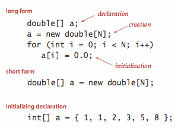
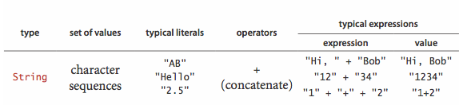
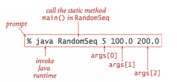
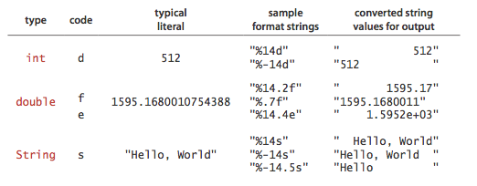
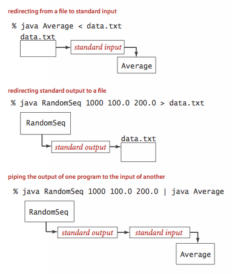
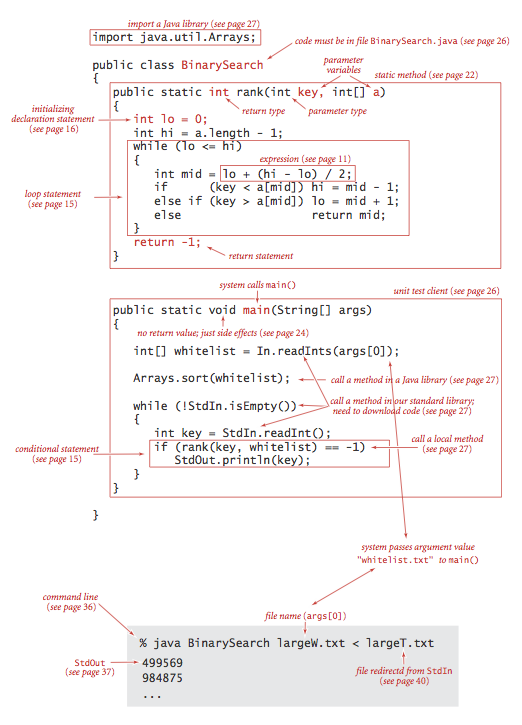

Programming Model
Our study of algorithms is based upon implementing them as programs written in the Java programming language. We do so for several reasons:
- Our programs are concise, elegant, and complete descriptions of algorithms.
- You can run the programs to study properties of the algorithms.
- You can put the algorithms immediately to good use in applications.
§ Primitive data types and expressions.
A data type is a set of values and a set of operations on those values. The following four primitive data types are the basis of the Java language:
- Integers, with arithmetic operations (
int) - Real numbers, again with arithmetic operations (
double) - Booleans, the set of values { true, false }
with logical operations (
boolean) - Characters, the alphanumeric characters and symbols that you type
(
char)
A Java program manipulates variables that are named with identifiers. Each variable is associated with a data type and stores one of the permissible data-type values. We use expressions to apply the operations associated with each type.

The following table summarizes the set of values and most common operations on those
values for Java's int, double, boolean, and char
data types.

- Expressions. Typical expressions are infix.
When an expression contains more than one operator, the
precedence order specifies the order in which they are
applied:
The operators
*and/(and%) have higher precedence than (are applied before) the+and-operators; among logical operators,!is the highest precedence, followed by&&and and then||. Generally, operators of the same precedence are left associative (applied left to right). You can use parentheses to override these rules. - Type conversion.
Numbers are automatically promoted to a more inclusive type if no
information is lost.For example, in the expression
1 + 2.5, the1is promoted to thedoublevalue1.0and the expression evaluates to thedoublevalue3.5. A cast is a directive to convert a value of one type into a value of another type. For example (int) 3.7is3. Casting adoubleto aninttruncates toward zero- Comparisons. The following mixed-type operators compare two values of the same type and produce a
booleanvalue:- equal (
==) - not equal (
!=) - less than (
<) - less than or equal (
<=) - greater than (
>) - greater than or equal (
>=)
- Other primitive types. Java's
inthas a 32-bit representation; Java'sdoubletype has a 64-bit representation. Java has five additional primitive data types:- 64-bit integers, with arithmetic operations (
long) - 16-bit integers, with arithmetic operations (
short) - 16-bit characters, with arithmetic operations (
char) - 8-bit integers, with arithmetic operations (
byte) - 32-bit single-precision real numbers, with arithmetic operations(
float)
- Comparisons. The following mixed-type operators compare two values of the same type and produce a
§ Statements.
A Java program is composed of statements, which define the computation by creating and manipulating variables, assigning data-type values to them, and controlling the flow of execution of such operations.
- Declarations create variables of a specified type and name them with identifiers. Java is a strongly typed language because the Java compiler checks for consistency. The scope of a variable is the part of the program where it is defined.
- Assignments associate a data-type value (defined by an expression) with a variable.
- Initializing declarations combine a declaration with an assignment to initialize a variable at the same time it is declared.
- Implicit assignments.
The following shortcuts are available when our purpose is to modify a variable's value
relative to the current value:
- Increment/decrement operators: the code
i++is shorthand fori = i + 1. The code++iis the same except that the expression value is taken after the increment/decrement, not before. - Other compound operators: the code
i /= 2is shorthand fori = i/2.
- Increment/decrement operators: the code
- Conditionals provide for a simple change in the flow of execution—execute the statements in one of two blocks, depending on a specified condition.
- Loops provide for a more profound change in the flow of execution—execute the statements in a block as long as a given condition is true. We refer to the statements in the block in a loop as the body of the loop.
- Break and continue.
Java supports two additional statements for use within while loops:
- The
breakstatement, which immediately exits the loop - The
continuestatement, which immediately begins the next iteration of the loop
- The
- For notation.
Many loops follow this scheme: initialize an index variable to some value and then use a
whileloop to test a loop continuation condition involving the index variable, where the last statement in thewhileloop increments the index variable. You can express such loops compactly with Java'sfornotation. - Single-statement blocks. If a block of statements in a conditional or a loop has only a single statement, the curly braces may be omitted.

§ Arrays.
An array stores a sequence of values that are all of the same type.
If we have N values, we can use the notation a[i] to refer
to the ith value for any value of i from 0 to
N-1.
- Creating and initializing an array.
Making an array in a Java program involves three distinct steps:
- Declare the array name and type.
- Create the array.
- Initialize the array values.
- Default array initialization.
For economy in code, we often take advantage of Java's
default array initialization convention
and combine all three steps into a single statement.
The default initial value is zero for numeric types and
falsefor typeboolean. - Initializing declaration.
We can specify the initialization values at compile time,
by listing literal values between curly braces, separated by commas.

- Using an array.
Once we create an array, its size is fixed.
A program can refer to the length of an array
a[]with the codea.length. Java does automatic bounds checking—if you access an array with an illegal index your program will terminate with an ArrayIndexOutOfBoundsException. - Aliasing.
An array name refers to the whole array—if we assign one array name to another,
then both refer to the same array, as illustrated in the following code fragment.
This situation is known as aliasing and can lead to subtle bugs.int[] a = new int[N]; ... a[i] = 1234; ... int[] b = a; ... b[i] = 5678; // a[i] is now 5678.
- Two-dimensional arrays.
A two-dimensional array in Java is an array of one-dimensional arrays.
A two-dimensional array may be ragged
(its arrays may all be of differing lengths), but we most often work with
(for appropriate parameters M and N) M-by-N two-dimensional arrays.
To refer to the entry in row
iand columnjof a two-dimensional arraya[][], we use the notationa[i][j].
§ Static methods.
Static methods are called functions in many programming languages, since they can behave like mathematical functions. Each static method is a sequence of statements that are executed, one after the other, when the static method is called.
- Defining a static method.
A method encapsulates a computation that is defined as a
sequence of statements.
A method takes arguments
(values of given data types) and computes a return value
of some data type or causes a side effect.
Each static method is composed of a signature
and a body.

- Invoking a static method.
A call on a static method is its name followed by
expressions that specify argument values in parentheses, separated by commas.
When a method is called, its argument variables are initialized
with the values of the corresponding expressions in the call.
A
returnstatement terminates a static method, returning control to the caller. If the static method is to compute a value, that value must be specified in areturnstatement. - Properties of methods.
Java methods have the following features:
- Arguments are passed by value. When calling a function, the argument value is fully evaluated and the resulting value is copied into argument variable. This is known as pass by value. Array (and other object) references are also passed by value: the method cannot change the reference, but it can change the entries in the array (or value of the object).
- Method names can be overloaded. Methods within a class can have the same name, provided they have different signatures. This features is known as overloading.
- A method has a single return value but may have multiple return
statements.
A Java method can provide only one return value.
Control goes back to the calling program as soon as the
first
returnstatement is reached. - A method can have side effects.
A method may use the keyword
voidas its return type, to indicate that it has no return value and produces side effects (consume input, produce output, change entries in an array, or otherwise change the state of the system).
- Recursion.
A recursive method is a method that calls itself either directly or indirectly.
There are three important rules of thumb in developing recursive programs:
- The recursion has a base case.
- Recursive calls must address subproblems that are smaller in some sense, so that recursive calls converge to the base case.
- Recursive calls should not address subproblems that overlap.
- Basic programming model.
A library of static methods is a set of static methods that
are defined in a Java class.
A basic model for Java programming is to develop a program that
addresses a specific computational task by creating a library of static methods,
one of which is named
main(). - Modular programming.
Libraries of static methods enable modular programming,
where static methods in one library can call static methods defined in
other libraries.
This approach has many important advantages.
- Work with modules of reasonable size
- Share and reuse code without having to reimplement it
- Substitute improved implementations
- Develop appropriate abstract models for addressing programming problems
- Localize debugging
- Unit testing.
A best practice in Java programming is to include a
main()in every library of static methods that tests the methods in the library. - External libraries.
We use static methods from three different kinds of libraries,
each requiring (slightly) differing procedures for code reuse.
- Standard system libraries in
java.lang, includingjava.lang.Math,java.lang.Integer, andjava.lang.Double. This libraries are always available in Java. - Imported system libraries such as
java.util.Arrays. Animportstatement at the beginning of the program is needed to use such libraries. - Libraries in this book. Follow these instructions for adding algs4.jar to your Java classpath.
Math.sqrt(),Arrays.sort(),BinarySearch.rank(), andStdIn.readInt(). - Standard system libraries in
 APIs.
APIs.
- Java libraries.
- Our standard libraries.
- Your own libraries.
Strings.

- Concatenation.
- Conversion.
- Automatic conversion.
- Command-line arguments.
Input and output.
- Commands and arguments.

- Standard output.
- Formatted output.

- Standard input.
- Redirection and piping.

- Input and output from a file.
- Standard drawing.
Binary search.
Below is a complete Java program BinarySearch.java that illustrates many of the basic features of our programming model. It implement a classic algorithm known as binary search and tests it for an application known as allowlist filtering.

The static method rank() takes an integer key and a sorted
array of int values as arguments and returns the index of the key
if it is present in the array, -1 otherwise.
It accomplishes this task by maintaining variables lo
and hi such that the key is in a[lo..hi]
if it is in the array, then entering into a loop that tests the
middle entry in the interval (at index mid).
If the key is equal to a[mid], the return value is mid;
otherwise the method cuts the interval size about in half,
looking at the left half if the key is less than a[mid]
and at the right half if the key is greater than a[mid].
The process terminates when the key is found or the interval is empty.
- Development client.
- Allowlisting. For testing, we use the sample files tinyAllowlist.txt, tinyText.txt, largeAllowlist.txt, and largeText.txt.
- Performance.
Input and output libraries.
Here is a list of the input and output libraries that we use throughout the textbook and beyond.
We briefly describe the input and output libraries and include a sample client.
Standard input and standard output.
StdIn.java and StdOut.java are libraries for reading in numbers and text from standard input and printing out numbers and text to standard output. Our versions have a simpler interface than the corresponding Java ones (and provide a few technical improvements). RandomSeq.java generates random numbers in a given range. Average.java reads in a sequence of real numbers from standard input and prints their average on standard output.
In.java and Out.java are object-oriented versions that support multiple input and output streams, including reading from a file or URL and writing to a file.% java Average 10.0 5.0 6.0 3.0 7.0 32.0 3.14 6.67 17.71 <Ctrl-d> Average is 10.05777777777778
Standard drawing.
StdDraw.java is an easy-to-use library for drawing geometric shapes, such as points, lines, and circles. RightTriangle.java draws a right triangle and a circumscribing circle. Draw.java is an object-oriented versions that support drawing in multiple windows.
Standard audio.
StdAudio.java is an easy-to-use library for synthesizing sound. Tone.java reads in a frequency and duration from the command line, and it sonifies a sine wave of the given frequency for the given duration.
% java Tone 440.0 3.0
Image processing.
Picture.java is an easy-to-use library for image processing. Scale.java takes the name of a picture file and two integers (width w and height h) as command-line arguments and scales the image to w-by-h.

|

|

|